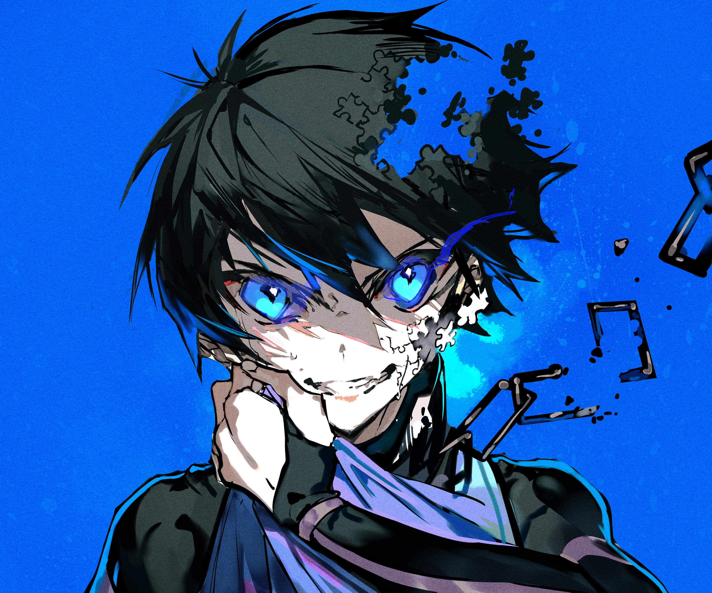

Blue Lock anime do Ego

Sinipose
Na segunda temporada de Blue Lock, intitulada Blue Lock vs. U-20 Japan, o projeto enfrenta seu maior desafio: provar sua eficácia enfrentando a Seleção Japonesa Sub-20. Com apenas 35 jogadores restantes, Jinpachi Ego, o idealizador do projeto, propõe uma partida decisiva contra a seleção nacional juvenil. A vitória garantiria aos jogadores do Blue Lock a chance de representar oficialmente o Japão; a derrota significaria o fim do projeto e a proibição de seus participantes de atuarem profissionalmente. omelete.com.br Para formar a equipe que enfrentará a seleção Sub-20, Ego seleciona os seis melhores jogadores do programa para liderar trios em partidas de avaliação. Os 11 atletas que demonstrarem melhor desempenho serão escolhidos para o confronto final. omelete.com.br A temporada também aprofunda a rivalidade entre os irmãos Rin e Sae Itoshi. Enquanto Rin busca superar seu irmão mais velho, Sae lidera a seleção Sub-20 com o objetivo de desmantelar o projeto Blue Lock, visto como uma ameaça ao sistema tradicional de formação de jogadores no Japão. Composta por 14 episódios, a segunda temporada estreou em 5 de outubro de 2024 e foi transmitida semanalmente aos sábados pela Crunchyroll.